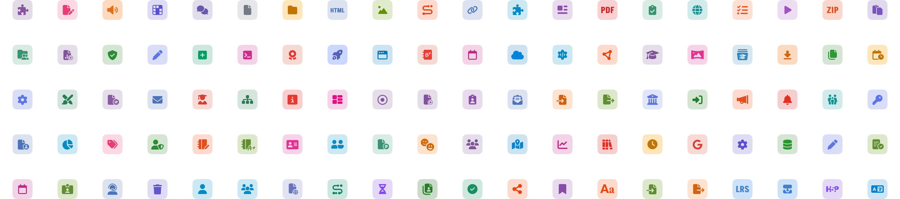
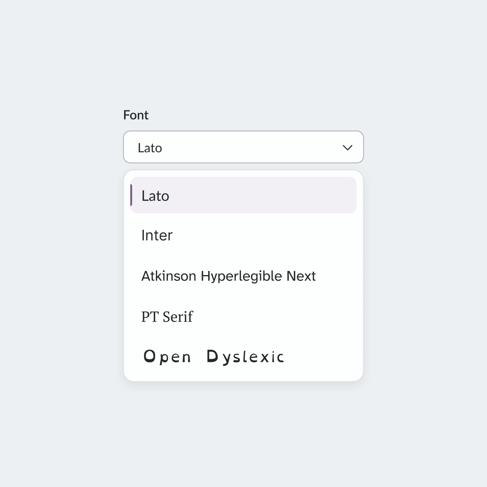
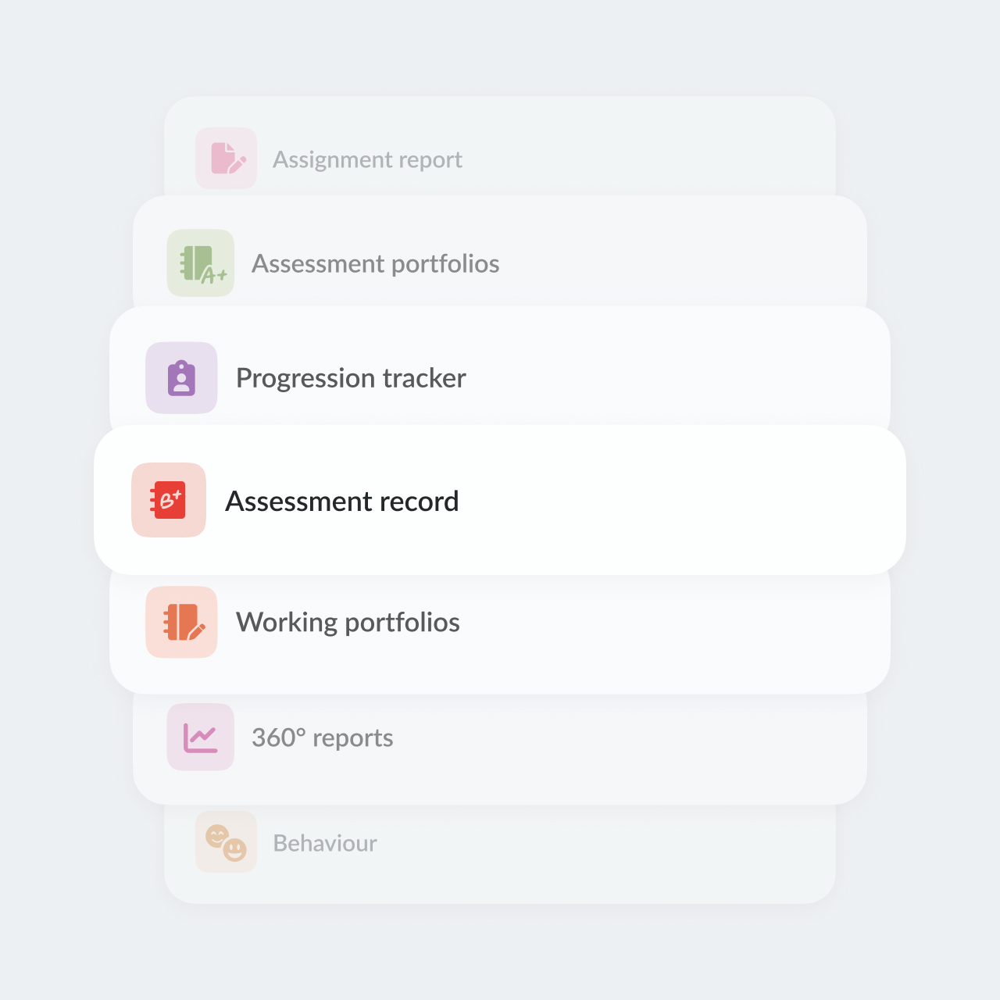

Making a Design System work at scale
I transformed a fragmented UI into a scalable design system adopted by 8 development teams. I simplified the existing pattern library, introduced clear usage guidelines, and established a collaborative process with engineering, reducing inconsistency and enabling the system to scale predictably as the product evolved.

Context
itslearning is a large European Learning Management System (LMS) with a 25 year long history that serves millions of teachers and students across K-12, higher and vocational education in 10+ countries.
itslearning's design system is called Prometheus and consists of a Svelte component library, a Figma UI kit and web-based guidelines for internal use.
Problem
When I joined itslearning in late 2022, the design system already existed, but hardly anyone used it. Only the team maintaining the system relied on its components, while other product teams continued building custom solutions for similar cases.
The UX team faced the same issue. The UI kit had grown without clear rules or ownership: duplicated components, overlapping styles and inconsistent decisions. Designers regularly introduced new patterns, and engineering teams implemented them as-is, which made the interface increasingly fragmented over time.
Layout system
The product contained hundreds of pages built independently over more than 20 years. Despite their variety, most of them followed a small number of recurring patterns.
I analysed the existing interface and introduced a unified page template system. It defines consistent navigation, content area, panels, spacing, and responsive behavior. Content layouts could adapt between narrow, wide, and full-width containers depending on the use case.
Today, both designers and developers start from a shared template instead of a blank canvas, which dramatically speeds up design and implementation. A common code also allows to evolve the templates over time to make them more flexible and easier to use.
It's so simple to layout the page content now with standard sizes in the designs. Both for spacing, layout etc. So thank you! Even though we can't put it everywhere yet, for the new stuff it's a life saver. Frontend Lead & Architect at itslearning
Sanoma Learning Design System reused this approach to layouts and made it available to all product teams across Sanoma Learning.
Colors
The color palette had grown over time without clear structure or rules. Similar colors were used inconsistently, and introducing branding changes was risky because accent and brand colors appeared almost everywhere in the interface.
- Reorganized the palette without changing the UI.
- Reduced the number of tokens in the main palette from 83 to 56.
- Defined clear roles for each color.
- Mapped 300+ custom colors and replaced them with tokens.

As a result, no new colors have been introduced in the last 2 years. The usage rules are clear and strainghtforward, with hesitance between options being eliminated.


Iconography
The icon system had evolved organically over many years, resulting in inconsistent styles, proportions, and alignment behavior across the product.
We rebuilt the system around a unified structure using Font Awesome as a foundation. System icons were standardized for consistency and easier maintenance, while brand icons were redesigned into a single coherent style.

To make the system scalable, I also introduced reusable templates that allow any designer, regardless of illustration skills, to create new icons consistent with the existing set:
Typography
Similarly to colors, I consolidated all typography into a smaller, structured set of reusable text styles and mapped legacy styles to it. Over time, this significantly improved visual consistency across new features and redesigned areas of the product.


Once the typography system became predictable and consistent across itslearning, it made changing fonts individually per customer and user for personalization and accessibility possible. I analysed customer needs and internal requirement and prepared a limited font selection.
Attention to detail
Beyond large system changes, I consistently focused on small interface improvements that made the product feel more polished, cohesive, and intentional. From interaction states to spacing, hierarchy, and visual consistency, these details helped strengthen the overall quality and perception of the system.



Accessibility
When I joined, designers and developers were in a state of constant disagreement. I took multiple steps to change attitude in the UX team and improve communication with the accessibility front-end team:
- Taught designers to read and interpret WCAG and Understanding documents
- Built individual learning plans
- Aligned developers and designers on decision-making
- Prepared design solutions for issues from external accessibility audits, which significantly improved the overall level accessibility
- Introduced a Accessibility Annotation Kit, now used by 40+ designers in Sanoma Learning
- Co-founded the Accessibility Champions Group in Sanoma Learning.

The team learned to speak the same language, and accessibility issues decreased significantly.
Collaboration & Adoption
A big part of my role is enabling collaboration between teams that previously worked in isolation.
I established weekly syncs with the Design System engineering team to review new components, edge cases, and implementation challenges early in the process. Together with the Product Owner, we also introduced regular pre-planning sessions to align upcoming work and coordinate requests from other product teams.
In practice, this means building communication and shared ownership around the system, making sure design and engineering decisions are discussed collaboratively instead of being solved independently inside separate teams.
Consequently, adoption of the Prometheus design system increased from 1 to all 8 developemnt teams working on itslearning.
Aleksandra combines a rare level of professionalism with a deep commitment to accessibility and product quality. She always ensures her team is moving in a clear, unified direction, and her approach to organizing work is truly impressive. Head of UX at Sanoma Learning
Impact

Turned a fragmented legacy UI into a scalable system, which in turn enabled
- personal font selection
- customer branding
- dark theme
This also brought the control over the itslearning look & feel back to the product team.

Increased adoption of the Prometheus design system from 1 to 8 development teams.

Strengthened accessibility and collaboration.